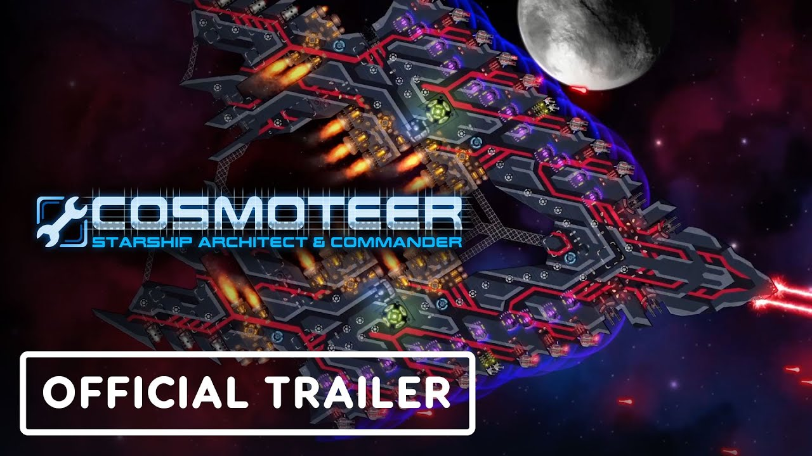

See gameplay trailer HERE.
Synopsis
Cosmoteer is a space strategy game where players build and manage their own spaceships, navigate the galaxy, and engage in battles. Developed by Walnut Developers, the game combines ship design, exploration, and combat mechanics. Players can create custom ships using various modular components like engines, weapons, shields, and crew stations. The game features both single-player and multiplayer modes. In single-player, players explore procedurally generated star systems, engage in missions, and encounter hostile forces. In multiplayer, players can challenge others to ship battles.
Key aspects of Cosmoteer include:
- Shipbuilding: Players can design their ships from scratch using modular pieces, giving them full control over the ship's layout and functionality.
- Real-time Combat: Combat involves real-time strategy where players must position their ships, target enemies, and manage their crew effectively.
- Crew Management: You must assign crew to different stations on your ship to ensure smooth operation, such as maintaining engines or repairing damage during battle.
- Exploration: You travel through a procedurally generated universe, encounter different factions, and engage in various missions or quests.
- Customization and Upgrades: Players can upgrade their ships and technologies as they progress through the game.
It's a game that emphasizes creativity, tactical planning, and the thrill of space combat.
Factions
In the universe of Cosmoteer, there are currently four main factions:
- The Fringe
- The Cabal
- The Imperium
- The Monolith
Each of these factions feature their own unique designs, and typically favor a specific theme of weapon type. Although each faction still utilizes all wepaon types in some form in their builds, some specific types are more favored. The Fringe are known as scavengers, and their ships appear more scraplike. They usually favor missiles and cannons withinin their arsenal. The Cabal are known as religious authoritarians. Their ships are elegant and ethereal in aesthetic, and they utilize powerful ion lasers to display their dogmatic might. The Imperium are an ambitious military empire focused on designing warships of mass destruction. Their designs favor that of avian aesthetics with many of their ship being named after terrestrial birds. Their favored weapon of choice are missiles, specifically nukes. Lastly, the Monolith are a highly advanced and wealthy faction whose main combative focus isn't on weapons, but on defenses, where many of their ships heavily feature forcefields reinforced by heavy armor plating. They do not favor any weapon specifically.